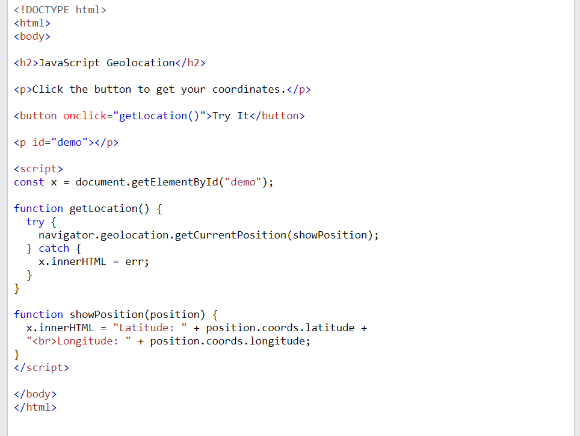
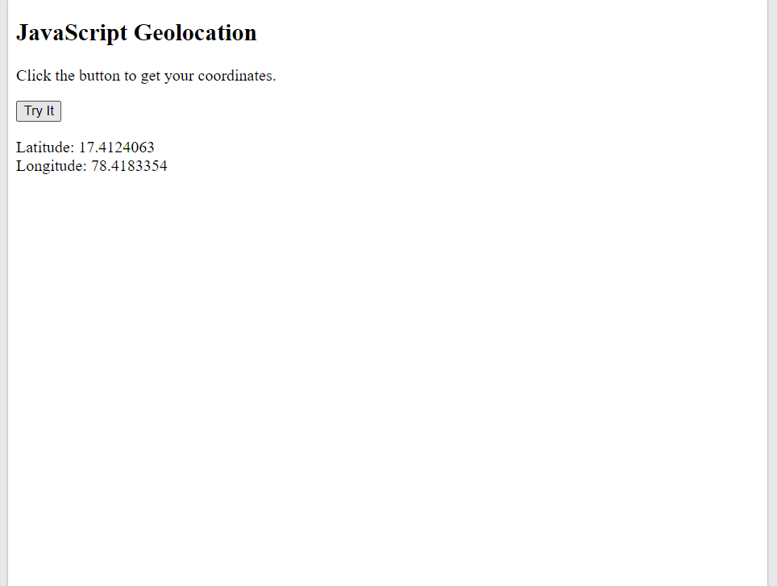
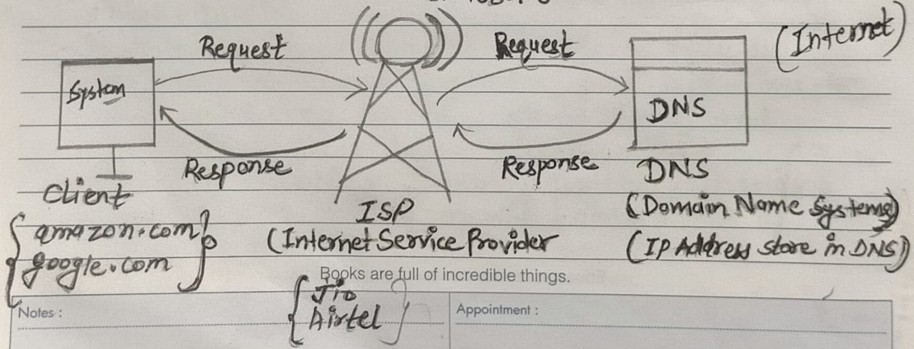
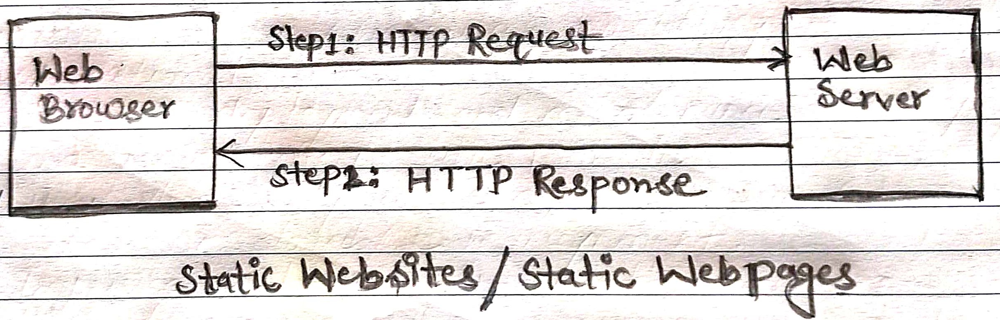
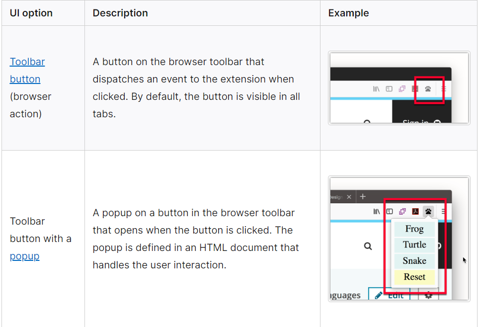
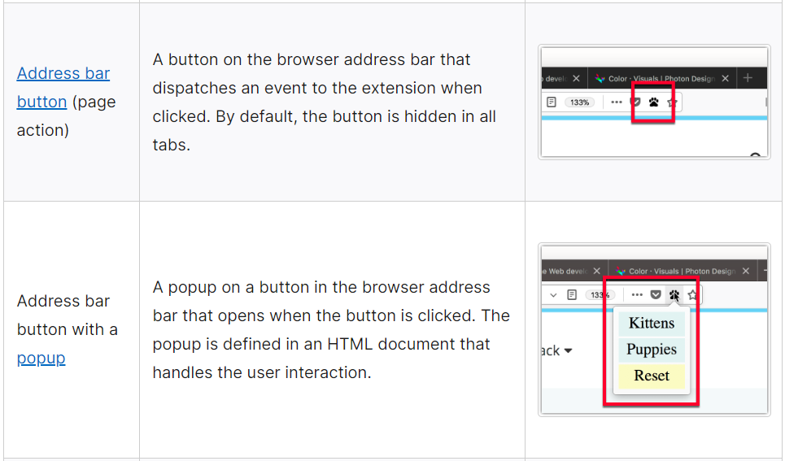
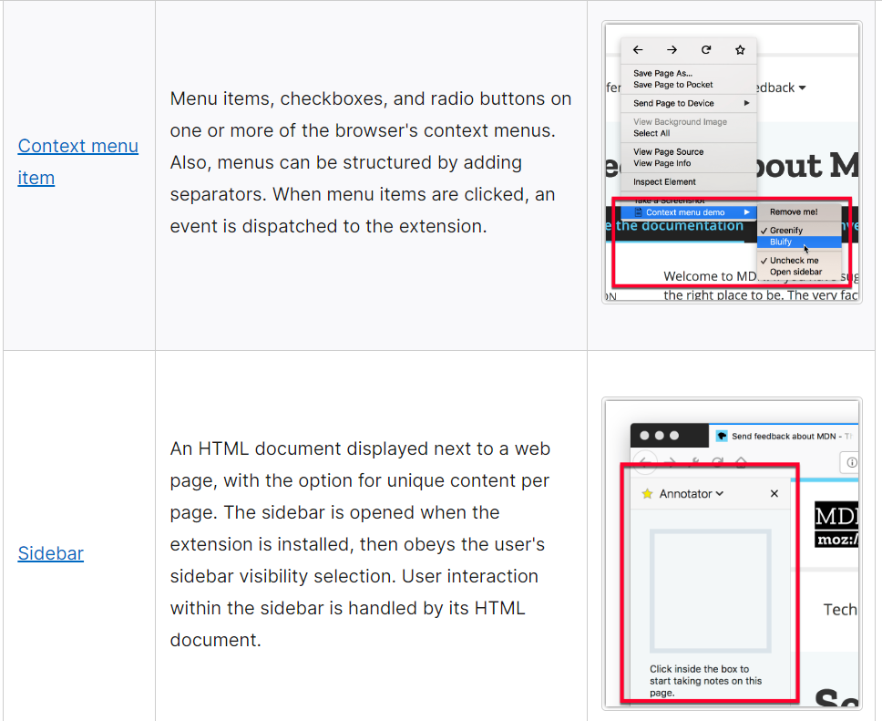
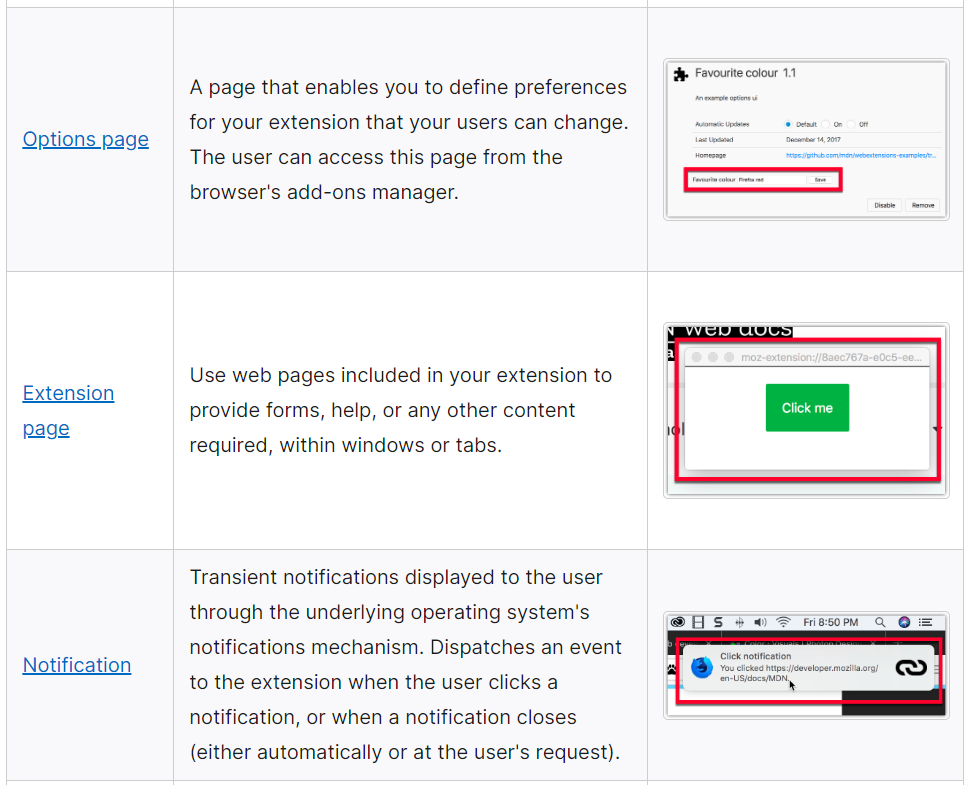
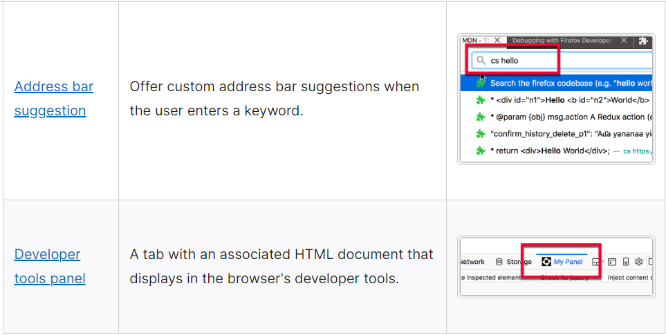
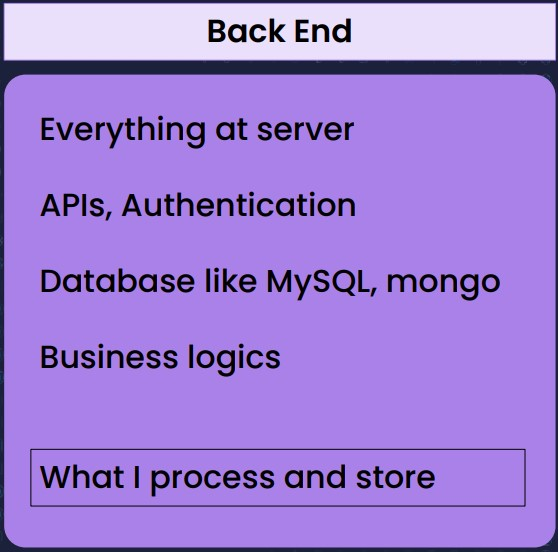

::Importance Web Dev Basics Interviews Questions and Answers::
Mentor Name: Full Stack Web Development By PW SKILLS - 1.0
- Hitesh Choudhary
- Sanket Singh
- Anurag Tiwari
Ques 1: What is Web Development?
Ans: Definition: Web development refers to the creating, building, and maintaining of websites. It includes aspects such as Web design, Web publishing, Web programming, and Database management (SQL & No-Sql). It is the creation of an application that works over the internet i.e. websites.
* Web development is the process of building a Website, Apps or softwares. It involves determining the needs of the client(user's) and creating an appealing interface, as well as building in functionality for the end-user, whether they are looking for information, ordering products, or scheduling appointments.
* Web development is used to create various Web applications offering specific functions and services. Examples include online banking systems, project management tools, social media platforms, and email services.
* Web programming, also known as web development, It is the creation of dynamic Web applications.

NOTE :
WEB :: Web refers to websites, web pages or anything that works over the internet. i.e; Websites.
DEVELOPMENT :: Development refers to building the application from Scratch.
Ques 2: What are Goals of Web Development?
Ans: There are many goals that a web developer may have, but some of the most common ones include creating visually appealing and user-friendly websites, developing sites that are optimized for search engine ranking, and ensuring that websites are properly coded and functional. In addition, web developers may also be responsible for maintaining and updating existing websites, as well as troubleshooting any technical issues that may arise.
Ques 3: What you will be able to do after web development knowledge?
Ans: Becoming a job-ready web developer / Development requires a combination of technical skills, practical experience, and soft skills. Here's a step-by-step guide to help you prepare for a career as a web developer:
- **Learn the Basics:**
- Start with HTML, CSS, and JavaScript, which are the foundational languages for web development.
- Understand how to structure web pages, apply styles, and add interactivity/functionality using JavaScript.
- **Choose a Specialization:**
- Web development has different areas like front-end, back-end, and full-stack. Decide which area interests you the most.
- **Learn Frameworks and Libraries:**
- Depending on your specialization, learn relevant frameworks and libraries. For example, for front-end, you might learn React, Angular, or Vue.js.
- **Version Control (Git):**
- Learn to use Git for version control. It's essential for collaborating with other developers and managing code changes.
- **Responsive Design:**
- Understand responsive design principles to ensure your websites work well on different devices and screen sizes.
- **Server-Side Technologies:**
- If pursuing back-end or full-stack development, learn about server-side technologies like Node.js, Python, Java, Ruby, or PHP.
- **Databases:**
- Familiarize yourself with databases such as Database, MySQL, SQL, PostgreSQL, MongoDB(NoSQL), or Firebase, depending on your technology stack.
- **APIs and Integrations:**
- Learn how to work with APIs to fetch and send data between your web application and external services.
- **Build Projects:**
- Practical experience is crucial. Build real-world projects to apply your knowledge and showcase your skills to potential employers.
- **Version Control and Collaboration:**
- Gain experience working on collaborative projects using Git and platforms like GitHub or GitLab.
- **Problem-Solving:**
- Web developers need strong problem-solving skills to troubleshoot and debug issues in their code.
- **Soft Skills:**
- Communication, teamwork, time management, and the ability to take and give constructive feedback are essential soft skills.
- **Online Courses and Resources:**
- Enroll in online courses, tutorials, and resources on platforms like Codecademy, Udemy, freeCodeCamp, W3School, and MDN Web Docs.
- **Practice Regularly:**
- Consistent practice is key. Code regularly, tackle challenges, and stay up-to-date with industry trends.
- **Create a Portfolio:**
- Showcase your projects and skills on a personal portfolio website. Your portfolio is an essential tool for impressing potential employers.
- **Networking:**
- Attend web development meetups, conferences, and online forums to connect with other developers and learn from their experiences.
- **Job Search and Interview Preparation:**
- Prepare your resume, cover letter, and online profiles like LinkedIn. Practice coding interviews and technical questions.
- **Continuous Learning:**
- The field of web development evolves rapidly. Commit to continuous learning to stay relevant.
- Remember that becoming job-ready takes time and dedication. Start with the basics, build a strong foundation, and gradually work your way up to more complex concepts and projects. Consistent practice, a growth mindset, and a passion for learning will contribute to your success as a web developer.


Ques 4: What is Web application?
Ans: Definition: A web-application is an application program that is usually stored on a remote server, and users can access it through the use of Software known as web-browser.
* It is a type of computer program that usually runs with the help of a web browser and also uses many web technologies to perform various tasks on the internet.
* A web application can be developed for several uses, which can be used by anyone like it can be used as an individual or as a whole organization for several reasons.
* Developers design web applications for a wide variety of uses and users, from an organization to an individual for numerous reasons. Commonly used web applications can include web-mail, online calculators or e-commerce shops.
* Examples of web applications are social networking sites like Facebook or e-commerce sites like Amazon.
Ques 5: What is Web API's?
Ans: API stands for Application Programming Interface.
* A Web API is an application programming interface for the Web.
* A Browser API can extend the functionality of a web browser.
* A Server API can extend the functionality of a web server.
* All browsers (Web) have a set of built-in Web APIs to support complex operations, and to help accessing data.
# For example, the Geolocation API can return the coordinates of where the browser (Web) is located.

# For Output, the Geolocation API can return the coordinates of where the browser (Web) is located.

Ques 6: What is Internet?
Ans: Interconnected network of Computers arround the world.
* The Internet is a vast network that connects computers all over the world. Through the Internet, people can share information and communicate from anywhere with an Internet connection.
* INTERNET stands for Interconnected Network is a network system that connects millions of web servers. The full meaning of the INTERNET can also be explained by the bunch of websites of different organisations, schools, institutions and more. With the help of the INTERNET, the world is connected.
* The internet is a global network of billions computer and other electronic devices.With the internet,It is possible to access almost any information ,communicate with anyone else in the world, and do much more .You can do all of this by connecting a computer to the internet, which is also called going online
* The Internet is the backbone of the Web, the technical infrastructure that makes the Web possible. At its most basic, the Internet is a large network of computers which communicate all together.
* INTERNET stands for Interconnected Network is a network system that connects millions of web servers. Today the world will be stopped without an active internet connection Example: we able to do full stack web development classes due to internet.
* The Internet is a worldwide network of networks that uses the Internet protocol suite (also named TCP/IP from its two most important protocols).
Ques 7: How does Internet works?
Ans: The Internet connects millions of computers to each other so that they can interact with each other and also transmit data to each other:
- Internet uses a packet switching technique to transmit the data. Thus, the data to be sent is divided into packets and the data is sent in the form of packets only. Each packet of data contains various information like the address of the destination, error control information, etc.
- Internet majorly uses protocols called Internet Protocol (IP) and Transmission Control Protocol (TCP) to transmit data from one computer to another.
- Internet Protocol (IP) The internet protocol is a network layer protocol that is responsible for defining the rules that define how the information is sent over an internet connection from one computer to another.
- Internet Protocol is responsible for gathering the addresses to which the data is to be transmitted.
- Transmission Control Protocol (TCP) The transmission control protocol (TCP) is a transport layer protocol that works along with the internet protocol to transmit data over the internet. It is a connection-oriented and reliable protocol i.e. it establishes the connection first and then only, sends data over the established connection hence, there is no packet loss in the transmission control protocol.
- Transmission Control Protocol is responsible for the delivery of data once the Internet protocol gets the IP address of the destination.
- Also, there are several other protocols that are used by the internet for different purposes. For example, it uses Simple Mail Transfer Protocol (SMTP) to send mail from one client to another, it uses File Transfer Protocol (FTP) to transfer files over the internet, it uses Hypertext Transfer Protocol (HTTP) through which a browser (client) can interact with the internet server.

Ques 8: What are the Goals of Web Application?
Ans:The Goals of Web Applications are Follows:
* Provide a Solution to address a specific problem or fullfill a need.
* Offer an excellent user experience through intuitive design and smooth navigation.
* Ensure accessibility for users of all abilities.
* Optimize performance and reliability for fast loading and responsive interactions.
* Implement robust security measures to protect user data & maintain trust.
* Design for Scalability to handle increasing demands as the application with external systems or API's.
* Enables seamless integration with externaol systems or API's.
* Utilize data analytics to gain insights for improving the application and personalizing user experiences.
Ques 9: How did Web Development start?
Ans: Web Development started with the creation of the World Wide Web (WWW) by Sir Tim Berners-lee at CERN in 1989.
* Tim Berners-Lee, a British scientist, invented the World Wide Web (WWW) in 1989, while working at CERN. The Web was originally conceived and developed to meet the demand for automated information-sharing between scientists in universities and institutes around the world.
Ques 10: How did Web Application start?
Ans: Web applications have been around since before the World Wide Web went mainstream. For example, Larry Wall developed Perl, a popular server-side scripting language, in 1987. That was seven years before the internet really started gaining popularity outside of academic and technology circles.
Ques 11: What is Web Browser?
Ans: A web browser or browser is a program that retrieves and displays pages from the Web, and lets users access further pages through hyperlinks. A browser is the most familiar type of user agent.
* A web browser is application software for accessing websites. When a user requests a web page from a particular website, the browser retrieves its files from a web server and then displays the page on the user's screen. Browsers are used on a range of devices, including desktops, laptops, tablets, and smartphones.
Ques 12: How does web browser works?
Ans: A web browser takes you anywhere on the internet. It retrieves information from other parts of the web and displays it on your desktop or mobile device. The information is transferred using the Hypertext Transfer Protocol, which defines how text, images and video are transmitted on the web. This information needs to be shared and displayed in a consistent format so that people using any browser, anywhere in the world can see the information.
* A web browser is a software application used to access information on the World Wide Web, it retrieves information from other parts of the web and displays it on your desktop or mobile device.
* A web browser is a software application that allows users to view and navigate through web pages on the internet. It retrieves information from a web server and displays it on the user's device. The most popular web browsers include #GoogleChrome #MozillaFirefox, #MicrosoftEdge, #AppleSafari, #Opera, #Brave, #InternetExplorer.
Ques 13: Why do developers use web browsers?
Ans:There are various ways to use web browsers:
- Testing and debugging web applications and websites.
- Web browsers are accessing development resources tutorials and documentation.
- Checking compataibility across different paltforms and devices.
- Inspecting and modifying the HTML, CSS, and JavaScript of web pages.
- Web browsers debugging issues that may arise.
- Web browser extensions for developemnt purposes such as debugging and testing.
Ques 14: What are the lists of web browsers with Example?
Ans:
- Google Chrome browser : Developed by Google, Chrome is one of the most widely used web browser's available for various paltforms like windows, macOS, linux, Android, and iOS.
- Apple Safari browser : Developed by Apple, safari is the default web broswer for macOS, Android, and iOS.
- Microsoft Edge browser : Developed by Microsoft, Edge is the default web browser for windows, and it is also available for macOS, Android, and iOS.
- Opera browser : Opera is a feature-rich web browser available for Windows, macOS, linux, Android, and iOS.
- Brave browser : A privacy focused web browseer built on chromium available for Windows, macOS, linux, android, and iOS.
- Internet Explorer browser : Although deprecated and no longer actively developed, Internet, explorer is still used by some users on older versions of windows.
- Mozilla Firefox browser : An Open-source web browser developed by mozilla, available for windows, macOS, linux, Android, and iOS.
Ques 15: What is Browser engine?
Ans: A browser engine (also known as a layout engine or rendering engine) is a core software component of every major web browser that is responsible for transforming HTML documents and other resources of a web page into an interactive visual representation on a user's device. Common browser engines include Blink for (GoogleChrome), Trident for (MicrosoftEdge), Gecko for (MozillaFirefox), WebKit for (AppleSafari), Presto for (Opera), and Servo for (Linux Foundation).
Ques 16: How does Browser engine works?
Ans: A browser engine works by parsing and rendering web content. It processes HTML, CSS, and JavaScript to display web pages visually and interactively in a web browser.
Ques 17: What is Layout and Rendering engine?
Ans: The layout and Rendering Engine of a web page is typically specified by Cascading Style Sheets (CSS). Each style sheet is a series of rules which the browser engine interprets. For example, some rules specify typography details, such as font, color, and text size. The engine combines all relevant CSS rules to calculate precise graphical coordinates for the visual representation it will paint on the screen.
* Some engines may begin layout and rendering before a page's resources are downloaded. This can result in visual changes as more data is received, such as gradually filling in images or a flash of unstyled content.
Ques 18: What is JavaScript engine?
Ans: A JavaScript engine is a software component that executes JavaScript code. The first JavaScript engines were merge interpreters, but all relevant modern engines use just-in-time compilation for improved performance.
* JavaScript engines are typically developed by web browser vendors, and every major browser has one. In a browser, the JavaScript engine runs in concern with the rendering engine via the Document Object Model (DOM).
Ques 19: How does it know about the part to use for layout and process in Web Development?
Ans: Layout : Layout is the arrangement and organization of visual elements in design, whether for print, web, interiors, or other spaces, to create an appealing and functional composition. It involves placing elements like text, images, and graphics to guide the viewer's eye and convey information effectively.
Process : In web development, a "process" refers to the organized series of steps followed to create a website or web application. This process typically includes planning, design, front-end and back-end development, testing, deployment, and ongoing maintenance. It ensures a structured approach to building and maintaining web-based projects.
Ques 20: What is Static Websites? Give the Examples of Static Websites?
Ans: static means "served as-is". Static websites are the easiest to set up, so we suggest you make your first site a static site.
* Static websites are quick and easy to create. It is cheap to host. Static websites are secure.It is fun and you can create awesome sites with HTML, CSS, and JavaScript.
* A static website has fixed content. It does not require programming languages to build one. It is the easiest form of website to create. Static websites are build of HTML, CSS, and JavaScript.
* Static web pages are made of “fixed code,” and unless the site developer makes changes, nothing will change on the page. Think of it like a brochure for a business. Static sites give a lot of the same type of information that you could get from a brochure, but it can't just change itself. Example: resume websites, blog websites, portfolio websites, brochure websites.

Ques 21: What do I need to know to build a static website?
Ans: HTML, CSS and JavaScript are the basic languages to build any website.
- Create the structure with HTML : The first thing you have to learn, is HTML, which is the standard markup language for creating web pages.
- Style with CSS. The next step is to learn CSS, to set the layout of your web page with beautiful colors, fonts, and much more.
- Make it interactive with JavaScript. After studying HTML and CSS, you should learn JavaScript to create dynamic and interactive web pages for your users.
Ques 22: What are the Advantages of Static Websites?
Ans: The Advantages of Static Websites are following in below:
- Simplicity
- Speed
- Cost effectiveness
- Scalability
- Security
Ques 23: What are the Disadvantages of Static Websites?
Ans: Disadvantages of Static Websites are following in below:
- Limited Functionality
- Lack of flexibility
- No user interaction
- Not good for complex implementation
Ques 24: What is Dynamic Websites? Give the Examples of Dynamic Website?
Ans: Defintion: Dynamic site is a type of website that uses a server-side programming and database to generate its content.
* Dynamic website provide dynamic and interactive functionality to user.
* It has abilities like searching data in database, submit form data, display custom content etc.
* The term dynamic means that the server processes the content or even generates it on the fly from a database. This approach provides more flexibility, but the technical stack is more complex, making it dramatically more challenging to build a website.
* It has web pages whose content can change dynamically. A dynamic website accesses content from a Content Management System (CMS) or a database. This is the reason why the content of a website also get updated or altered when you update or alter the content of the database. To generate dynamic content, a dynamic website may choose to use server side scripting or client side scripting or both.
* Static web pages are made of “fixed code,” and unless the site developer makes changes, nothing will change on the page. Think of it like a brochure for a business. Static sites give a lot of the same type of information that you could get from a brochure, but it can't just change itself.Example: resume websites, portfolio websites, brochure websites
* A dynamic website or dynamic web page contains information that changes, depending on the viewer, the time of the day, the time zone, the viewer's native language, and other factors. For example, the Computer Hope home page is a dynamic web page that automatically changes daily to give visitors new content. Example: Twitter , Facebook , Instagram.
Ques 25: What are the Advantages of Dynamic Websites?
Ans: The Advantages of Dynamic websites are following in below:
- Flexibility
- User Interaction
- Better SEO
- Scalability
- Advanced Functionality
Ques 26: What are the Disadvantages of Dynamic Websites?
Ans: Disadvantages of Dynamic Websites are following in below:
- A lot of overhead for simple applications
- Requires more cost for deployment and implementation
- Complex to implement
Ques 27: What is Client?
Ans: Definition: A client typically refers to a device or software program that connects to a web server in order to access web-based resources or services. These clients are typically web browsers, such as Google Chrome, Mozilla Firefox, or Microsoft Edge,
which are used to access and display web pages and other content.
Ques 28: What are the Use Cases of Client?
Ans: A use case is a written description of how users will perform tasks on your website. It outlines, from a user’s point of view, a system’s behavior as it responds to a request. Each use case is represented as a sequence of simple steps, beginning with a user's goal and ending when that goal is fulfilled.
Ques 29: What is Server?
Ans: Definition: A server is a device or software program that provides resources or services to clients over the internet or a private network. In the context of web development, clients are typically web browsers or mobile apps that connect to the server in order to access web-based resources or services.
Ques 30: What are the Use Cases of Server?
Ans: server-side website programming mostly involves choosing which content is returned to the browser in response to requests. The server-side code handles tasks like validating submitted data and requests, using databases to store and retrieve data and sending the correct data to the client as required.
Ques 31: What is an IP Address?
Ans: An IP address is a number used to address each device on an IP network uniquely.
* IP stands for Internet Protocol which is the protocol layer with which the address is associated.
* "IP address" typically still refers to 32-bit IPv4 addresses until IPv6 is deployed more broadly.
Ques 32: What is an ISP (Internet Service Provider)?
Ans: An ISP (Internet Service Provider) is a company that manages some special routers that are all linked together and can also access other ISPs' routers. So the message from our network is carried through the network of ISP networks to the destination network.
Ques 33: What is DNS (Domain Name System)?
Ans: DNS: Domain Name System is like an address book for websites. When you type a web address in your browser, the browser looks at the DNS to find the website's IP address before it can retrieve the website.
Ques 34: What is Protcols?
Ans: A protocol is a system of rules that define how data is exchanged within or between computers. Communications between devices require that the devices agree on the format of the data that is being exchanged. The set of rules that defines a format is called a protocol.
Ques 35: What is http or https?
Or
What are the different between http or https?
Ans: HTTP :: Hypertext Transfer Protocol (HTTP) is an application-layer protocol for transmitting hypermedia documents, such as HTML. It was designed for communication between web browsers and web servers, but it can also be used for other purposes. HTTP follows a classical client-server model, with a client opening a connection to make a request, then waiting until it receives a response. HTTP is a stateless protocol, meaning that the server does not keep any data (state) between two requests.
HTTPS :: HTTPS (HyperText Transfer Protocol Secure) is an encrypted version of the HTTP protocol. It uses TLS to encrypt all communication between a client and a server. This secure connection allows clients to safely exchange sensitive data with a server, such as when performing banking activities or online shopping.
Ques 36: What is User Interface (UI)?
Ans: Definition: UI designers are graphic designers specialized in creating web components.
* User Interface (UI) is anything that facilitates the interaction between a user and a machine. In the world of computers, it can be anything from a keyboard, a joystick, a screen or a program. In case of computer software, it can be a command-line prompt, a webpage, a user input form, or the front-end of any application.
# Examples of UI (User Interface) are: Buttons, images, text fields, dropdowns, etc.
Ques 37: What are the Examples of User Interface (UI)?
Ans: Extensions that use WebExtension APIs are provided with several user interface options so that their functionality can be made available to the user. A summary of those options is provided below, with a more detailed introduction to each user interface option in this section.
* The following how-to guides provide step-by-step guidance to creating some of these user interface (UI) options:





Ques 38: What is User Experience (UX)?
Ans: UX is an acronym that stands for User experience. It is the study of the interaction between users and a system. Its goal is to make a system easy to interact with from the user's point of view.
* The system can be any kind of product or application that an end user is meant to interact with. UX studies undertaken on a web page for example can demonstrate whether it is easy for users to understand the page, navigate to different areas, and complete common tasks, and where such processes could have less friction.
Ques 39: Web Development can be classified into how many types?
Ans: Web Development can be classified into Two Types:
- Front-End Development [Client-side]
- Back-End Development [Server-side]
Ques 40: What does a front-end Developer do?
OR
Ques: Who is a front-end developer? Explain role and responsibility in your own words?
OR
Ques: What is Front-end developer?
Ans: Whatever we see when we open a website is frontend and a person who developed these things are called frontend developers. The main role of a frontend developer is to make the front as simple as possible which is easily understandable by the users.
Ques 41: What are the Benefits of beings a front-end developer?
Ans: User Experience: Front-end developers are responsible for creating the user interface (UI) and ensuring a positive user experience (UX). They focus on designing and implementing intuitive, user-friendly interfaces that engage and delight users.
Visual Design: Front-end developers work closely with web designers to bring visual designs to life. They take design mockups and transform them into functional web pages using HTML, CSS, and JavaScript. Their attention to detail and understanding of design principles help create visually appealing websites.
Cross-Browser Compatibility: Front-end developers ensure that websites and web applications work consistently across different web browsers. They test and optimize the code to ensure compatibility with popular browsers like Chrome, Firefox, Safari, and Edge. This helps reach a wider audience and provides a seamless experience for all users.
Responsive Design: With the increasing use of mobile devices, responsive design has become crucial. Front-end developers implement responsive techniques to make websites adapt to different screen sizes and resolutions. This ensures that the website looks and functions well on desktops, laptops, tablets, and smartphones
Performance Optimization: Front-end developers optimize the performance of websites by minimizing file sizes, reducing HTTP requests, and implementing caching techniques. They aim to deliver fast-loading web pages, resulting in better user experience and improved search engine rankings.
Accessibility: Front-end developers focus on creating websites that are accessible to all users, including those with disabilities. They follow web accessibility guidelines and implement features like proper heading structure, alternative text for images, and keyboard navigation. This allows individuals with disabilities to access and navigate websites effectively.
Collaboration with Backend Developers: Front-end developers work closely with backend developers to integrate the frontend and backend systems. They communicate requirements, implement front-end designs, and connect the user interface with the backend functionality. This collaboration ensures seamless functionality and data flow within web applications
Emerging Technologies: Front-end development constantly evolves, with new technologies, frameworks, and tools emerging regularly. Front-end developers stay up-to-date with the latest trends and leverage new technologies to enhance the user experience and improve development efficiency.
Continuous Improvement: Front-end developers continually refine and improve websites by analyzing user behaviour, collecting feedback, and implementing iterative changes. They monitor website performance, identify areas for improvement, and optimize the frontend codebase to deliver an exceptional user experience.
Ques 42: How to Become a Front-end developer?
Ans:Now, let’s come to the skills and approaches that you’re required to follow to become a proficient Front-End Developer:
1. Learn HTML, CSS & JavaScript: You even can’t imagine becoming a key player in Front-End Development by skipping or ignoring these three technologies – HTML, CSS & JavaScript. These are the building blocks of front-end development. All in all, HTML (HyperText Markup Language) is concerned with the structure of the web page whereas CSS (Cascading Style Sheets) looks after the styling of the web page. Moreover, if we talk about JavaScript, it is the client-side programming language that is used to implement interactive functionalities such as animations, audio/videos, maps, and many more on the website.
You need to learn the syntax, features & implementation of these languages for creating a website. There are various online platforms available over the web from where you can learn these technologies and can practice your skills as well.
2. Get Familiar with Front-End Frameworks: Once you’ll get done with HTML, CSS & JavaScript, now you need to learn several Front-End frameworks as per your requirement and convenience. In general, the Front-End frameworks are libraries of already written codes and these frameworks make the front-end development easier and more efficient due to various features such as reusable components, etc. If we particularly talk about CSS, Bootstrap and Tailwind are the most popular framework in this domain. Moreover, there are various other renowned frameworks such as Angular, React, Vue, etc. that can be taken into consideration for frontend development.
Also, you don’t need to learn every single framework out there instead you’re required to pick out the relevant ones based on various factors such as project requirements, market trends, ease of learning, etc.
3. Learn Other Relevant Tools & Technologies:Now it’s time to dive deeper into the ocean of Frontend Development and learn about several other crucial tools and technologies. In this context, you need to have a sound knowledge of the Version Control System that allows you to track and control the changes in the source code more conveniently. Some of the most popular version control systems that can be taken into consideration are GitHub, Mercurial, Beanstalk, etc. Also, you need to learn about Responsive Design that is concerned with the compatibility of web page UI with different devices such as computers, phones, tablets, and others. It is a more crucial aspect in Frontend Development as it is directly linked with the User Experience.
Furthermore, you need to know about Command Line as well along with the GUI functionalities. You’re also required to get familiar with several Browser Developer Tools that help you to enhance the quality of the User Interface. Several other prominent tools and technologies that can also be taken into consideration are Testing & Debugging, CSS Preprocessing, Web Performance metrics, etc. Indeed, getting proficient with these technologies will help you to become a competent front-end developer.
4. Build ProjectsAs they said – Education without application is just entertainment!! So now you need to apply all your learnings & skills of front-end development in the practical world. You can start it by building several mini-projects such as a Quiz Game, To-Do List, etc. and then switch over to projects like Audio Player, Chatting Platform, and others. It will give you some much-needed hands-on experience and the utmost exposure to frontend development. Also, while creating projects, you may end up with various new things or concepts that you might not learn from any book or tutorial.
You’re also strongly recommended to contribute to open-source projects as it will not only enhance your skills but will also build your credibility and reputation that eventually can help you to get some worthwhile career opportunities
5. Build a PortfolioIt is one of the most crucial aspects if you’re looking forward to starting your career as a Frontend Developer. Whether you’re searching for a job in an organization or planning to start something on your own, you need to showcase your previous work to the recruiters or clients to get noticed. Moreover, especially for beginners, you can start it by creating a simple static website for yourself where you can list your completed projects along with the tools & technologies you work upon and your contact details. A well-created portfolio will surely help you to demonstrate your skills in a better way that will provide you an edge over others.
6. Connect with the Frontend Developer’s Community: Lastly, you need to connect with the right people of the Front-End Development domain that can help you in all the possible ways of becoming a proficient Front-End Developer. For example, these people can provide you the learning resources, make you aware of the latest industry trends, can resolve your queries, and most importantly can land you up some ravishing career opportunities. You can opt to join Front-end Development Subreddit, several prominent communities such as Stack Overflow, GitHub, TapChief, etc. to connect with some brilliant minds. Undoubtedly, it is also one of the most-effective ways to enter the professional world from the learning environment.
Apart from the above-mentioned technical skills or approaches, there are several soft skills as well that are also required to be taken into consideration to become a proficient Front-End Developer. First and foremost, you need to have some good communication skills as you’ll be required to act as an intermediate between Web Designers, Backend Developers, Testers, etc. Moreover, you are also expected to have better Creativity, Problem-Solving, and Collaboration to excel in the Front-End Development domain.
Ques 43: What does a backend Developer do?
OR
Ques: Who is a backend developer?Explain role and responsibility in your own words.
OR
Ques: What is Back-end Developer?
Ans:A back-end developer is a person working on server-side technologies. Who is responsible for making the website work? It focuses on interacting with the database and writes scripts on the server to automate some tasks.

Ques 44: What are the Benefits of beings a back-end developer?
Ans:
Ques 45: How to become a back-end developer?
Ans:
Ques 46: What does Full Stack Web Developer do?
OR, What is Full Stack Web Developer?
Ans: